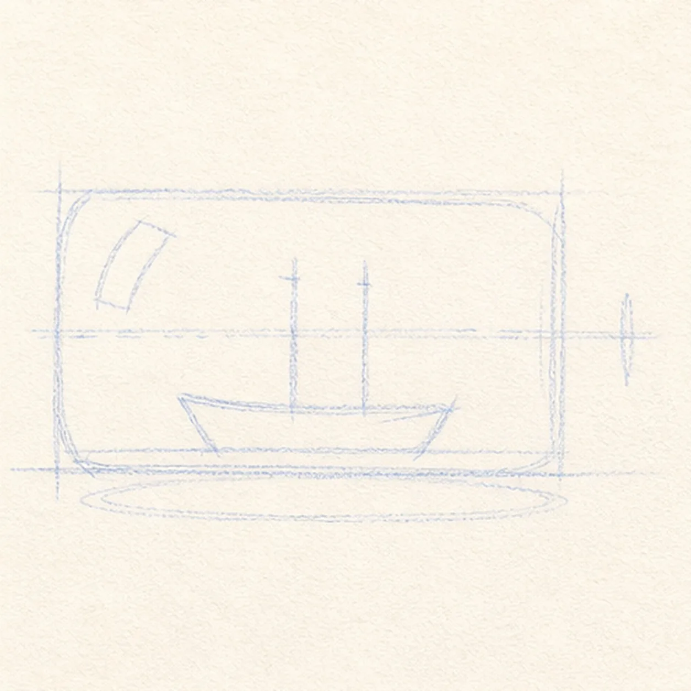
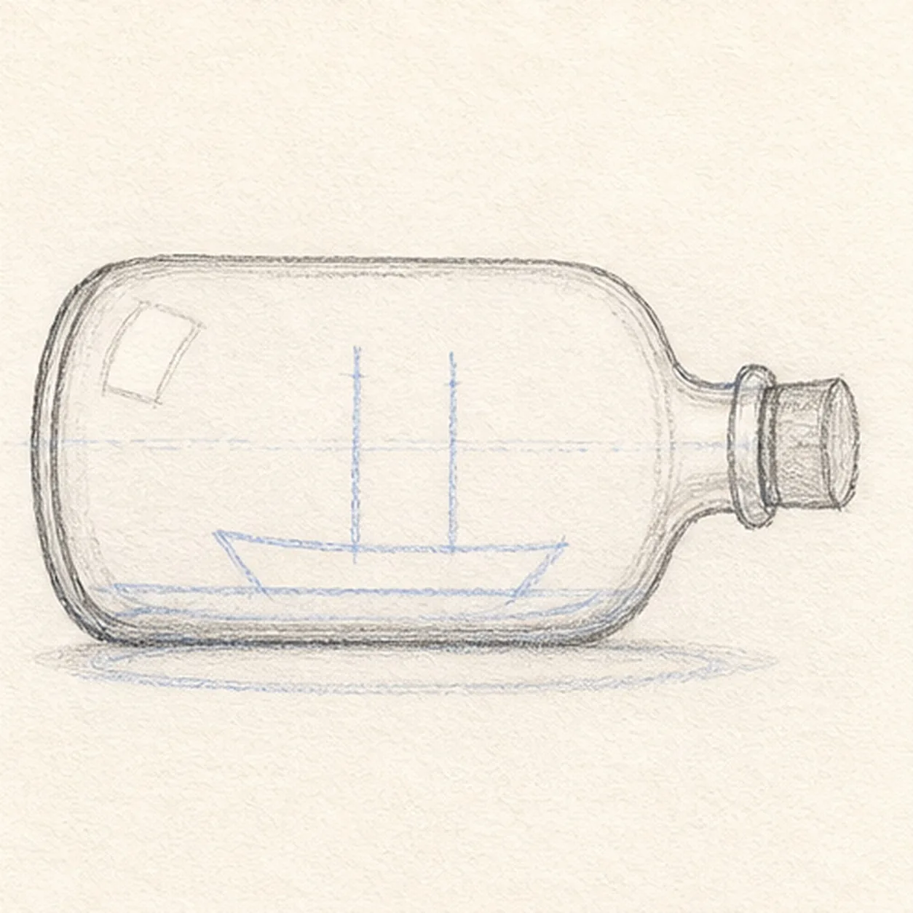
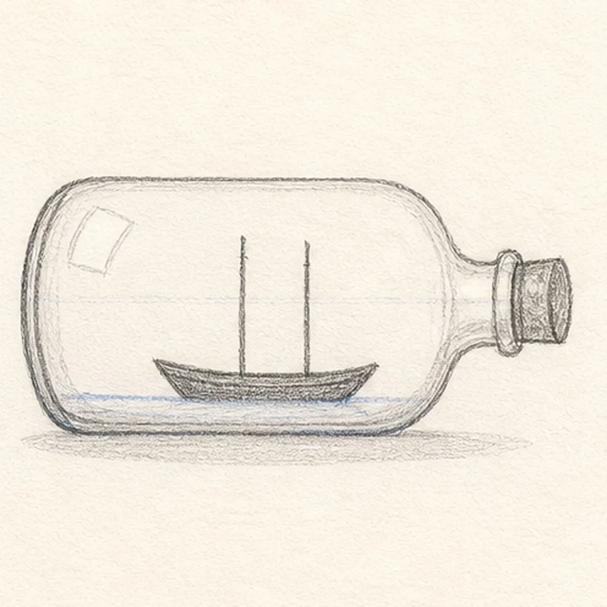
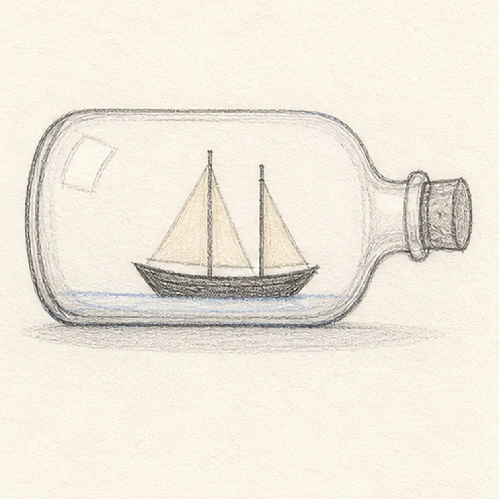
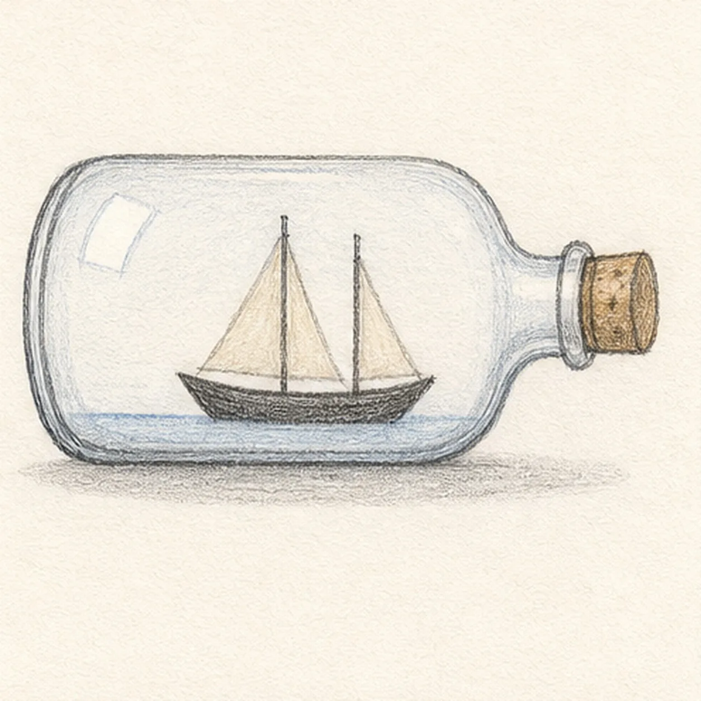

From the archive
Let's draw a sailboat in a bottle
Treat this as one small practice round: build the subject lightly, notice the shapes, then darken only the lines that help the finished sketch.
-
01

Map the bottle and boat
Use pale HB to place one long bottle box, a short neck axis, a small hull wedge, exactly two mast routes, a waterline, two reflection shapes, and a soft shadow footprint.
Sketch tip: Keep the boat much smaller than the bottle. Reserve its hull and mast routes now so later glass marks never have to be erased.
-
02

Shape the glass bottle
Connect the guide into one rounded bottle with a short neck, rim ellipse, thick base, and a small cork while preserving the tiny boat reserve.
Sketch tip: Ghost the long top curve once, then draw it in a relaxed pass. Echo the rim ellipse in the base so the bottle feels like one object.
-
03

Set the little boat
Draw the small dark hull and exactly two thin masts inside the established glass outline.
Sketch tip: Check the space above and below the hull before darkening it. The masts should rise from the hull, not touch the bottle edge.
-
04

Raise the two sails
Add exactly two simple triangular sails and the pale waterline, stopping the water marks cleanly at the hull.
Sketch tip: Use the mast routes as one edge of each sail. Leave a thin open strip around the boat so it reads inside the glass rather than on its surface.
-
05

Tint the glass
Add the two established reflection gaps, pale blue glass and water tint, warm cork, and soft gray shadow over only the forms already in place.
Sketch tip: Layer the blue in one direction and leave the reflection shapes as paper. A transparent object needs fewer pencil marks than a solid one.
-
06

Finish the tiny voyage
Strengthen only the established keeper contours, bottle rim, cork grain, hull, masts, sails, waterline, color, reflections, and shadow.
Sketch tip: Compare the two sail angles one last time, then stop. Extra waves, birds, or lettering would make the small scene harder to read.


![Handmade graphite and restrained colored-pencil sketch of one left-facing muted-ochre seahorse with one horse-like head and long snout, one three-point crown ridge, one visible eye, one arched neck and rounded belly, one tapering clockwise-curled tail wrapped exactly once around one teal-green eelgrass stem, one ribbed dorsal fin, exactly two small side fins, exactly seven curved torso plates, exactly five narrow eelgrass leaves, exactly two pale-blue bubbles, exactly two open-paper highlights, visible paper tooth, and one broken cool-gray ground shadow](../assets/seahorse-curled-around-eelgrass-finished-v1.webp)